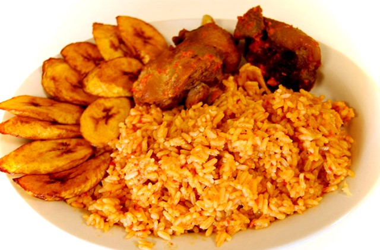

Description of the Image
File Type Information
This image is a JPG. JPEG's are able to compress impressive detail into a shareable file size, they are most helpful in storing and sharing digital images.
Why I Chose This Image
I chose this image because after finding the very excited face image I started thinking about things that make me feel that way. Of course I ended up with a plate of food.
Source
This image is from Wikimedia Commons.
Image Source: My Source